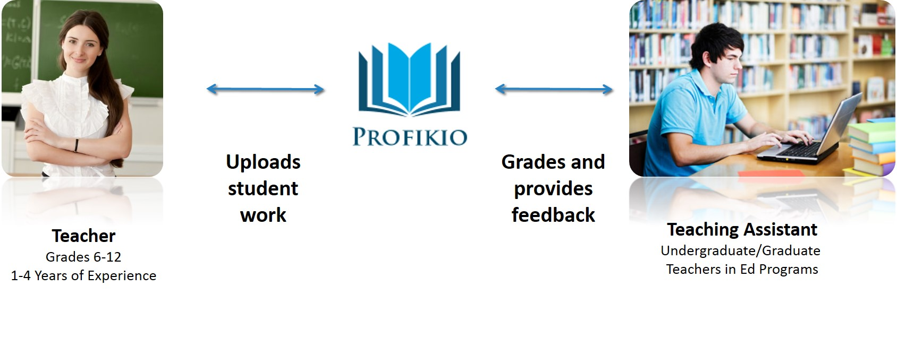

Connecting teachers with the support they need.

Profikio is an online marketplace that connects 6th-12th grade teachers with teaching assistants to grade and provide feedback on student assignments.
| Teachers | Students | Teaching Assistants |
|---|---|---|
| Better data, faster | More timely, in-depth feedback | Extra income |
| More time to innovate | Learn how to improve | Hands-on classroom experience |
Profikio is currently looking for teachers and teaching assistants to participate in a pilot of our service! Ideal teachers work in public middle or high schools teaching a core subject. Ideal TA's are current undergraduate or graduate students majoring in education. If you are interested, email Chen at Profikio.